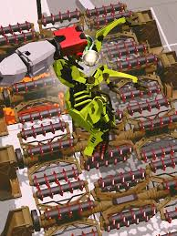

my favorite part about this game is definitly rampage I personally love this mode because it is a wave based game and each enemy has a specific amount of tons and you want the most amount of tons destroyed to be the top on the leaderboard or as they like to call to be top dog so after every wave you get 3 choices of upgrade but you can only choose one so you have to be very smart about the upgrades because one wrong mistake and your run is over there is no end its just until you die or decide your bored but who would be bored ripping robots apart no one unless you just hate yourself just kidding kinda anyway after you die you can see the leaderboard again ahowin ghow manty people are better than you so then after you see that you really want to be top 10 so then atleast you are on the leaderboard. but then you realize that it is way harde than you though so you spend multiple hours trying then eventually your headset dies and then you try it again once your headset charges then you repeat until you maybe get it or give up but then the next day you realize somebody beat your score then the grind repeats until you just stop and realize your not having fun anymore so then you go back to story mode or you go to sandbox either one is pretty fun anyway that is really all you need to know about underdogs vr.
